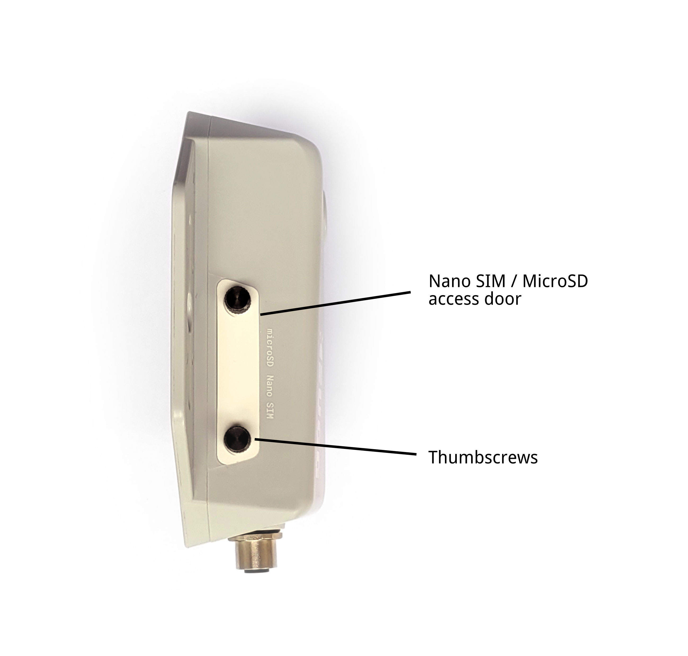
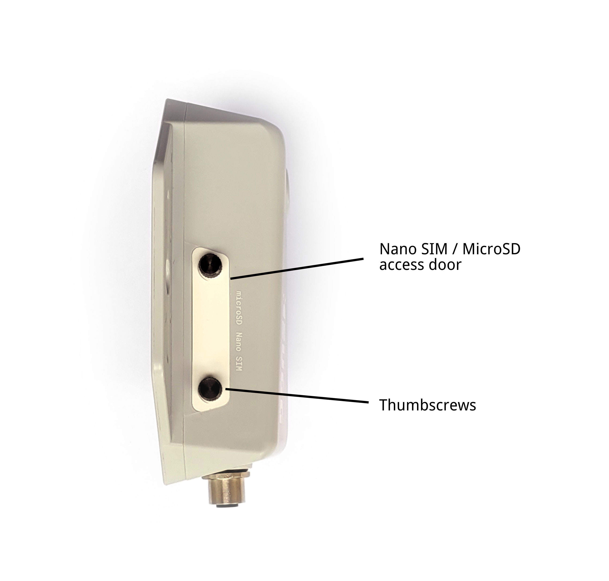
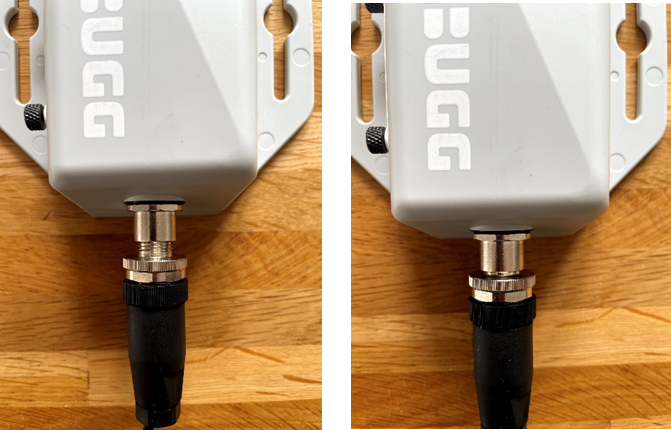
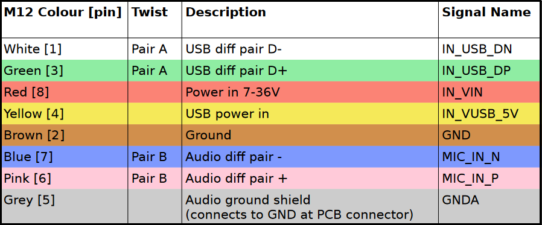

Enclosure and ports¶
Overview¶
Bugg's key exterior features are annotated below:
 

Mounting wings¶
Bugg can be mounted in the environment using the mounting wings, by following one of the two recommended approaches:
- Thread a flat strap through slots, across the back of the device, and tie it around a suitable feature in the environment (e.g., a tree trunk)
- Use the screw heads to bolt the device firmly to a flat surface (e.g., a wall)

Of course, if required, other more creative approaches might be required. In this case, please be careful to not obscure the microphone with any mounting hardware to ensure Bugg is able to capture the best audio quality possible.
Side door¶
To insert or replace the microSD or nano SIM cards, undo the two thumbscrews on the side of the device to remove the white side door.

Both cards should be inserted with the metal contacts facing downwards. Push the cards firmly into their respective slots until you feel a click.
To remove the cards, push the cards into the device until you hear a click, then release and they will push themselves partly out of the device. You can then pull them out fully easily by hand.
M12 connector¶
Through a waterproof M12 connector at the bottom of Bugg, the device is able to receive power, connect to an external microphones, or expose a debugging interface.
Connecting a cable¶
To connect a Bugg to an M12 male cable (e.g., for power):
- Align the M12 male connector on the cable with the female M12 connector on Bugg
- Push the two connectors together firmly
- Screw the cable connector fully into the Bugg connector by rotating the appropriate part until there are no threads visible

In the above image, the knurled ring is used to screw the two connectors together. However, the exact rotating part may vary between cable batches. Please do not skip this step, as otherwise the cable will easily fall out and the connection will not be waterproof.
Pinout¶
The full pinout of the Bugg M12 interface is provided below.
